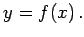
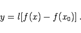
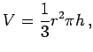
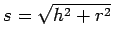

Grundlage einer Skala ist eine Funktion  Zu dieser Funktion konstruiert man eine Skala, indem man auf einer Kurve, z.B. einer Geraden, die Funktionswerte y als Längen abträgt, aber mit dem Argument x beziffert. Man kann somit eine Skala als eindimensionale Darstellung der Wertetabelle einer Funktion auffassen.
Die Skalengleichung zur Funktion y=f(x) lautet:
|  | (2.257) |
Durch x0 wird der Anfangspunkt der Skala festgelegt. Mit dem Maßstabsfaktor l wird berücksichtigt, daß für eine konkrete Skala nur eine bestimmte Länge zur Verfügung steht.
| Beispiel Rechenschieber |
|
|
| Beispiel Volumenskala | ||||||||||||||||||
|
läßt sich die Skalengleichung wie folgt herleiten: Volumen  Mantellinie ,
erhält man dann die Markierung auf dem Trichter gemäß der rechten Abbildung. |